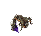

SHANDALAR 2003 is a mod for the Shandalar campaign mode of
Microprose's 1997 PC version of Magic: The Gathering. This version of
the game adds cards from up through the Scourge expansion, the last
set to use the classic card frame.
Shandalar 2003 is built on top of ManaLink 3 and Korath's excellent
Gemcutter's Guild mod. Check out the rest of the incredible modding scene
for the Microprose game on the
SlightlyMagic forums!
FEATURES
-
Over 4000 cards to collect, from all Standard, Starter, and Supplemental
sets up until Eighth Edition.
- 55 brand new thematic enemy decks.
-
Updated rules, including the Vancouver Mulligan, modern Legendary rule,
and updated creature typelines. Mana Burn has also been disabled by
default, but can be reenabled by modifying the game settings (see below).
-
Compatability for modern versions of Windows, including fixed text
display.
-
Includes
Sonic's Manalink 3 Makeover
for clean (and period appropriate) in-game UI.
ABOUT

-
The game generally works well on modern versions of Windows, but game
crashes are not unheard of. Make sure you're saving often! If the game
does crash, make sure to check your display settings: Sometimes it won't
return your resolution back to normal correctly when it crashes.
-
If you're encountering game crashes immediately after starting the game,
try saving after spawning in, then resetting and loading the game. This is
a known issue on some PCs.
-
Some users have reported a bug which throws two errors when booting the
game: These cause the character creation to not work and the basic lands
to be lacking watermarks. I'm still looking into why this happens as it
doesn't happen on all PCs, but for now the game should still be fully
playable even with those errors.
-
All difficulty options have been fully implemented, but if you're looking
for a recommendation, most of the playtesting for the game was done on
Magician difficulty. It provides a fair challenge while still giving you
leeway to build towards a fun deck in my experience, as long as you know
how the game works.
-
While many cards have been added to this version, there are still a decent
amount of cards from this era of the game that do not exist on this client
due to programming difficulties. This notably includes all cards with the
Morph and Flashback abilities, as well as many other individual cards that
couldn't be added due to limitations of the engine.
-
If you want to check if a given card is available, select the Shandalar
Deckbuilder shortcut, which will open the deck builder with all cards from
the game available, allowing you to create a deck you can aim to build in
the main game, or just check to see if something is obtainable.
-
The Shandalar.ini file contains many adjustable options about the game,
including the window mode the game runs in, options for the enemy AI,
toggles for obtainable cards, cards found in Dungeons, Dungeon special
rules, and game rules such as Mana Burn. Each option has a description of
how to use it, simply open Shandalar.ini in any text editor to change
these options.
WHAT IS SHANDALAR?
Shandalar is a singleplayer Magic campaign where you explore the
Plane of Shandalar, taking quests, defeating enemies, earning cards,
conquering dungeons, and defeating the five Evil Wizards before taking on
the planeswalker Arkazon. The game is genuinely a lot of fun, but it doesn't
really explain its overarching rules, at least not in-game in a convenient
spot. Here's what you should know going in.
-
The goal of the game is to defeat each of the five Wizards in their
castles before any of them are able to cast the Spell of Dominion.
Periodically, a Wizard will send one of their minions to attack a city. If
you don't defeat the minion at the city after a small amount of time, the
Wizard will place the city in a Mana Dome. If one Wizard places three
cities in Mana Domes, they cast the Spell of Dominion and it's Game Over.
Once a city is in a Mana Dome, you can free the city by fighting the enemy
that conquered it, but the battle will be more difficult and you'll give
up more cards from Ante if you lose.
-
Each Wizard's starting life total is influenced by their current number of
Mana Domes, and can also be decreased by defeating more of their minions
in duels on the overworld. Once a Wizard is defeated, not only do all of
their minions disappear from the Overworld, but you also get the option to
choose any three cards of that Wizard's color to add to your collection
(excluding Dungeon treasure cards).
-
You start the game with 10 Mana Links, cities on the map you've "tapped."
Each Mana Link you have adds one to your starting life total, and you can
get new Mana Links as rewards from quests. If a Wizard places one of the
cities you've tapped in a Mana Dome, you lose that Mana Link, permanently
reducing your starting life. You can learn which cities you have Mana
Links at by talking to the Wise Men in towns and cities.
-
In the overworld, you slowly lose Food. When at 0 Food, your movement
speed is drastically reduced, so make sure to keep an eye on your Food
supply.
-
Cards are acquired from winning duels, purchasing from villages/cities,
and from overworld events. After winning a game, you have the option to
either take some number of cards or take a dungeon clue. Dungeon clues
give you information about the appearance, location, and special rules
(i.e. no Instants allowed, a special Enchantment that starts in play,
etc.) of Dungeons where you can find the most powerful cards in the game.
-
While in Dungeons or Castles, you can find dice on the ground. The dice
will give you a bonus in your next match, either more starting life or
letting you start with a random nonland permanent from your deck on the
battlefield at the start of the next game. The life total bonuses
generally stack with each other, while getting a new card to start with
will overwrite the old one.
-
Decks in Shandalar are a minimum of 40 cards with a maximum of 3 copies of
each card: If your deck has fewer than 40 cards in it, it will be filled
with random cards from your collection. Keep in mind that Ante'd cards are
removed from your deck before the game begins, so if you want to avoid
random cards, include 41 cards to account for the Ante.
-
In addition to cards, you can spend your gold at certain locations to
purchase World Magic. These are activated or passive effects that
influence the overworld and deckbuilding, including things like increasing
movement speed, increasing the number of cards you can have in your
starting deck, or making the Wizards require more taps to cast the Spell
of Dominion.
-
The color you choose at the beginning of the game affects both the colors
of the cards you start with as well as one activated World Magic you begin
with. These cost Amulets to use, which are a secondary currency that can
be traded for cards or used to activate World Magic. These World Magics
can also be purchased later from various cities on the overworld.
-
White: Sword of Resistance (Spend one White Amulet to be teleported to
a city that is under attack)
-
Blue: Leap of Fate (Spend one Blue Amulet to teleport a great distance
in the direction you're facing)
-
Black: Conjurer's Will (Spend one Black Amulet to edit your deck
outside of a village/city)
-
Red: Staff of Thunder (Spend one Red Amulet to destroy the nearest
overworld enemy)
-
Green: Quickening (Spend one Green Amulet for a temporary increase in
movement speed)
CONTROLS FAQ
-
Click on the overworld to move. Walk on the roads between towns to walk
faster. Right click in the overworld to bring up the menu that includes
Saving/Loading. In shops and when choosing cards to trade for, press Y to
confirm. In card selection menus with multiple pages, the buttons to
scroll through the pages are at the bottom (This is a new addition in the
modded client).
-
The game will always give you the option to use optional abilities, but
it's not always clear and can be easy to accidentally skip through them
without realizing. When the opportunity to use an optional ability arises,
click on the card you want to use. For example, after Shadowmage
Infiltrator deals damage, the game will pause for "Dealing Damage
Effects". If you want to draw the card, click on the Infiltrator at this
point. This same process applies when stacking multiple simultaneous
triggers, click on the cards in the order you want them to resolve.
-
You can autotap the mana for a spell or ability by double clicking on it
rather than single clicking. Sometimes the game will get confused when
trying to autotap with a large number of dual lands, so in these cases
it's likely better to manually tap, but with basic lands it generally
works fairly well.
-
If you want to stop before a certain phase of a turn (i.e. tapping a
creature with Icy Manipulator before combat), rather than passing your
turn normally, click on that phase of the opponent's turn on the sidebar.
This will skip to this phase before giving you the opportunity to use any
effects you want to.
-
If you want to fail to find or choose to put no card on the bottom of your
library after mulliganing, simply click outside of the popup window.
-
If the game is ever unresponsive, i.e. not letting you click on a creature
to attack or click on lands to tap them, try clicking on some other card,
like something in your hand you can't cast. This sometimes "wakes up" the
game and lets you continue.
-
When using an effect that interacts with damage, such as a Circle of
Protection, the game will prompt you to select a "damage card." The orange
"cards" that appear underneath players or creatures when they're dealt
damage are what's being referred to here, so select one of these cards to
interact with that damage.
CREDITS AND ETC
Shandalar 2003 was created by DrChillbrain in collaboration with Ben Wheeler
Discord community. Special shoutouts to smnk, tommadness, and Halinn for
supporting the project. Of course none of this would be possible without the
original mod created by Korath and the rest of the devs behind ManaLink 3.
Got a bug to report? Just want to show off your cool deck? Shoot me an
E-Mail at
chillbrainlanes@gmail.com!